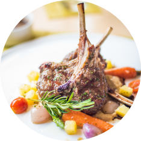
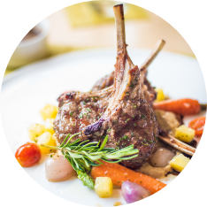

Street tacos are delicious, amazing, and oh so mouthwatering! Bite into tender steak, zesty lime flavor with a hint of spice and add on tomatoes, avocado, and onions for a savory bite you are going to love!
These street tacos are completely jam-packed with flavor and they are so easy to make. I love how the meat is so tender and juicy and only takes an hour to marinate! If you absolutely love tacos like me, try out these other amazing taco recipes! These taco-stuffed avocados, Baja fish tacos, and ground beef tacos will not disappoint!!

Traditional recipe with a twist.
Rating: 4 of 5 Stars
Just the right amount of spice.
Rating: 5 of 5 Stars
Fresh and healthy.
Rating: 4 of 5 Stars
Easy to make and so good.
Rating: 4 of 5 Stars Main Navigation (hamburger svg) Home (logo svg) Breakfast Brunch
Brunch  Lunch
Lunch  Dinner 
Appetizers
Dinner 
Appetizers  Desserts
Desserts  Beverages
Beverages  (avatar svg)
Search (search svg)
Connect
Social Media Links
Facebook (facebook svg)
Instagram (instagram svg)
YouTube (youtube svg)
Tik Tok (tiktok svg)
Good Eats
(Taco-cheesington.png)
(avatar svg)
Search (search svg)
Connect
Social Media Links
Facebook (facebook svg)
Instagram (instagram svg)
YouTube (youtube svg)
Tik Tok (tiktok svg)
Good Eats
(Taco-cheesington.png)